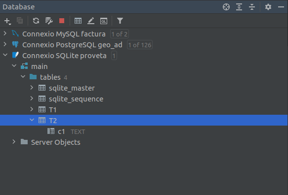
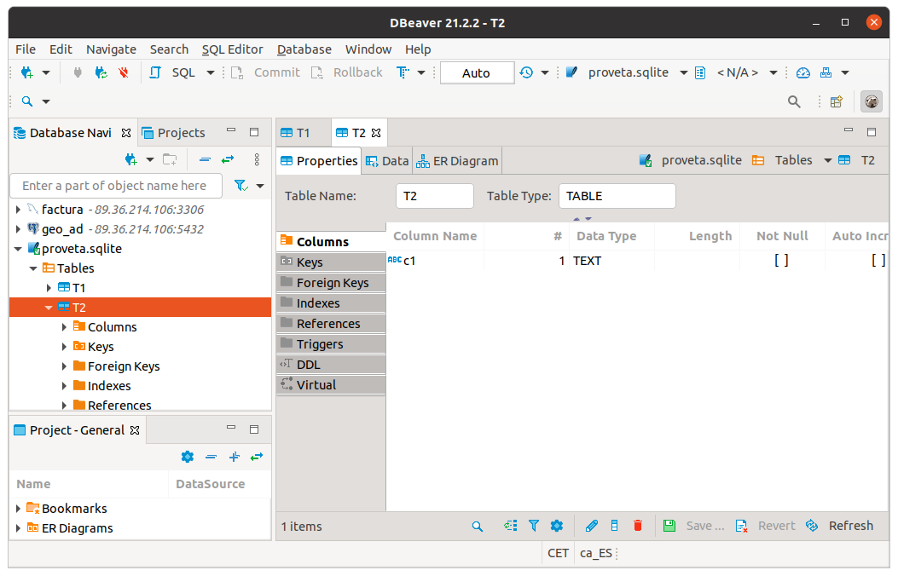

5.3 - Peticions bàsiques
Per escriure sentències SQL, JDBC disposa dels objectes Statement. Es tracta d’objectes que s'han de crear a partir de Connection, els quals poden enviar sentències SQL al SGBD connectat per a que s'executen amb el mètode executeQuery o executeUpdate.
Hi ha una variant del Statement, anomenada PreparedStatement que ens dóna més versatilitat per a posar paràmetres i executar la sentència d'una altra manera. El veurem en la pregunta 6.5.
La diferència entre els dos mètodes que executen sentències SQL és:
- El mètode executeQuery serveix per executar sentències de les quals s’espera que tornen dades, és a dir, són consultes SELECT.
- En canvi, el mètode executeUpdate serveix específicament per a sentències que no retornen dades. Serviran per a modificar la Base de Dades connectada (INSERT, DELETE, UPDATE, fins i tot CREATE TABLE) .
Sentències que no retornen dades
Les executem amb el mètode executeUpdate. Seran totes les sentències SQL excepte el SELECT, que és la de consulta. És a dir, ens servirà per les següents sentències:
- Sentències que canvien les estructures internes de la BD on es guarden les dades (instruccions conegudes amb les sigles DDL, de l’anglès Data Definition Language), com per exemple CREATE TABLE, CREATE VIEW, ALTER TABLE, DROP TABLE, ...,
- Sentències per atorgar permisos als usuaris existents o crear-ne de nous (subgrup d’instruccions conegudes com a DCL o Data Control Language), com per exemple GRANT.
- I també les sentències per a modificar les dades guardades fent servir les instruccions INSERT, UPDATE i DELETE.
Encara que es tracta de sentències molt dispars, des del punt de vista de la comunicació amb el SGBD es comporten de manera molt similar, seguint el patró següent:
-
Instanciació del Statement a partir d’una connexió activa.
-
Execució d’una sentència SQL passada per paràmetre al mètode executeUpdate.
-
Tancament de l’objecte Statement instanciat.
Mirem aquest exemple, en qual crearem una taula molt senzilla en la Base de Dades SQLite proveta.sqlite.
import java.sql.DriverManager;
import java.sql.SQLException;
import java.sql.Statement;
public class provaSQLiteCreacioTaula {
public static void main(String[] args) throws ClassNotFoundException, SQLException {
String url = "jdbc:sqlite:proveta.sqlite";
Class.forName("org.sqlite.JDBC");
Connection con = DriverManager.getConnection(url);
Statement st = con.createStatement();
st.executeUpdate("CREATE TABLE T1 (c1 TEXT)");
st.close();
con.close();
}
}
Des de la perspectiva de Bases de Dades (esquerra) podrem comprovar que ara ja existeix la taula, igual que des del DBeaver (dreta):
|  |  |
Sentències que retornen dades
Les executem amb el mètode executeQuery. Servirà per a la sentència SELECT, que és la de consulta.
ResultSet rs = st.executeQuery(sentenciaSQL);
L’objecte ResultSet conté el resultat de la consulta organitzat per files, de manera que en cada moment es pot consultar una fila. Per a anar visitant totes les files d’una a una, anirem cridant el mètode next() de l'objecte ResultSet, ja que cada vegada que s'execute next s’avançarà a la següent fila. Immediatament després d’una execució, el ResultSet es troba posicionat just abans de la primera fila, per tant per accedir a la primera fila caldrà executar next una vegada. Quan les files s’acaben, el mètode next retornarà fals.
Des de cada fila es podrà accedir al valor de les seues columnes fent servir uns quants mètodes get disponibles segons el tipus de dades a retornar i passant per paràmetre el número de columna que desitgem obtenir. El nom dels mètodes comença per get seguit del nom del tipus de dades. Així, si volem recuperar la segona columna, sabent que és una dada de tipus String caldrà executar:
rs.getString(2);
Les columnes es comencen a comptar a partir del valor 1 (no zero). La major part dels SGDB suporten la possibilitat de passar per paràmetre el nom de la columna, però no tots, així que normalment s'opta pel paràmetre numèric.
En el següent exemple, mostrem el contingut de les dues primeres columnes de la taula INSTITUTS de la Base de Dades geo de PostgreSQL, que resulten ser el codi numèric de l'Institut i el seu nom:
import java.sql.Connection;
import java.sql.DriverManager;
import java.sql.SQLException;
import java.sql.Statement;
import java.sql.ResultSet;
public class consultaPostgreSQL {
public static void main(String[] args) throws ClassNotFoundException, SQLException {
String url = "jdbc:postgresql://89.36.214.106:5432/geo";
String usuari = "geo";
String password = "geo";
Connection con = DriverManager.getConnection(url, usuari, password);
Statement st = con.createStatement();
ResultSet rs = st.executeQuery("SELECT * FROM instituts");
while (rs.next()){
System.out.print(rs.getInt(1) + "\t");
System.out.println(rs.getString(2));
}
st.close();
con.close();
}
}
En aquest exemple, on accedim a MySQL, accedirem a una altra taula:
import java.sql.Connection;
import java.sql.DriverManager;
import java.sql.ResultSet;
import java.sql.SQLException;
import java.sql.Statement;
public class consultaMySQL {
public static void main(String[] args) throws ClassNotFoundException, SQLException {
String url = "jdbc:mysql://89.36.214.106:3306/factura";
String usuari = "factura";
String password = "factura";
Connection con = DriverManager.getConnection(url, usuari, password);
Statement st = con.createStatement();
ResultSet rs = st.executeQuery("SELECT * FROM poble");
while (rs.next()){
System.out.print(rs.getInt(1) + "\t");
System.out.println(rs.getString(2));
}
st.close();
con.close();
}
}
No reutilització de Statement ni ResultSet
És un error prou habitual per inesperat el fet d'intentar reutilitzar un mateix ResultSet per a arreplegar més d'una consulta. . I el mateix amb el Statement. Bé siga per una mala implementació o un bug o el que siga, el comportament pot ser imprevisible. I per tant no val la pena arriscar-se.
Us aconselle que si en una aplicació teniu més d'una consulta de les que retornen dades, utilitzeu un Statement i un ResultSet diferents per a cadascuna.
No hi ha problema en utilitzar el mateix Statement per a moltes consultes de les que no retornen dades.
Assegurar l'alliberament de recursos
Si en un mateix mètode hem de tancar un objecte Statement i el Connection a partir del qual l'hem creat, s'haurà de tancar primer el Statement i després el Connection. Si ho fem al revés, quan intentem tancar el Statement ens saltarà una excepció de tipus SQLException, ja que el tancament de la connexió l’hauria deixat inaccessible.
A més de respectar l’orde, caldrà assegurar l’alliberament dels recursos situant les operacions de tancament dins un bloc finally. D’aquesta manera, encara que es produesquen errors, no es deixaran d’executar les instruccions de tancament.
Cal tenir en compte encara un detall més quan siga necessari realitzar el tancament de diversos objectes a la vegada. En aquest cas, encara que les situàrem una darrera l’altra, totes les instruccions de tancament dins el bloc finally, no seria prou garantia per assegurar l’execució de tots els tancaments, ja que, si mentre es produeix el tancament d’un dels objectes es llança una excepció, els objectes invocats en una posició posterior a la del que s’ha produït l’error no es tancaran.
La solució d’aquest problema passa per evitar el llançament de qualsevol excepció durant el procés de tancament. Una possible forma és encapsular cada tancament entre sentències try-catch dins del finally
De vegades, l’error en un tancament es produeix perquè l’objecte mai ha arribat a instanciar-se i, per tant, la variable presenta un valor null, o perquè ja ha estat tancat amb anterioritat. Ambdós casos són previsibles, i es pot evitar l'error fent servir una instrucció condicional que evite tancar-lo quan ja estava tancat.
Llicenciat sota la Llicència Creative Commons Reconeixement CompartirIgual 2.5